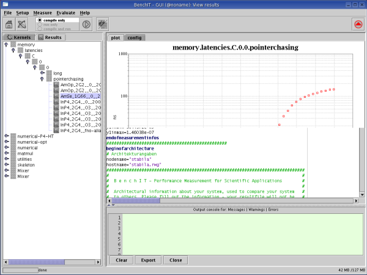

BenchIT GUI Resultmode
BenchIT GUI Resultmode
Click to find
Click on the picture to be directed to the belonging chapter.

The Resulttree

The result-tree contains folders, output files and mixers.
Problems:The Resulttree will be created while starting the GUI. If new files are copied to the output-path, they won't appear here.
Choose Result - Reload Result Tree to reload it.
to begin
Resultfiles
Those are the .bit files within BenchIT's output-folder. They contain informations about the system the kernel was measured on as well as they contain the measuring-informations.
popupmenu:
- Display - show the file as plot
- View this file as text - does what it sounds like
- Fix invalid values - checks for NaN and 1E27 and removes them
- Delete - deletes the bit file, the .bit.gui and its .bit.gp-file
to begin
Why this format
The format of the bit files was defined to fit gnuplot. So to all files also a gp file is generated, which is used for tools/QUICKVIEW.SH or manually for gnuplot.
to begin
Result Mixer
Result Mixer make it possible to combine the Results from different measurements within one plot.
Adding a function
Add it within the Result-Tree via Drag'n'Drop.
Right-Click the Mixer and choose "Add function from file". Select the .bit-file.
!You can hold shift or ctrl down to select more then one function from the dialog.
Removing a function
Select the function within the mixer and press the Delete-Key.
Right-click the function and choose Remove
Right-click the mixer and choose remove functions (you can hold shift and ctrl down to select more then one function).
Other Mixer-Options
Load,Save,Change title: right-click the mixer.
to begin
Used packages
For showing the result in a graphical way:
JFrees JFreeChart:http://www.jfree.org/jfreechart/index.html
For export:
FreeHEPs GraphicsIO:http://www.freehep.org
Both are licensed under the Lesser GUN Public License (LGPL).
to begin
The BenchIT GUIs Resultmode
Switching to the Resultmode
If you want to switch to the ResultMode, use The BenchIT-Menue:
Click the Results tab
Showing a result as plot or text
Click the switch-view icon in the toolbar or the
ResultTree's popupmenu.
If you switch to a textual-view, the file will be shown in a text-editor.
If you switch to graphical-view, the file will be shown as plot.
to begin
Options
Options within the options-tab:
- For every axis:
- Select min of axis
- Select max of axis
- Select number of ticks for axis. If you have a logarithmic axis, it won't change the number of ticks,
but will set the kind of representation for the ticks. if smaller then zero it will displayed as numbers (e.g. 100),
if greater then zero, they'll be displayed as potences (e.g. 10^2)
- Select the logarithmic base for axis. If smaller then 2, a non-logarithmic axis will be used.
- Select the axis name
- others:
- Select scalers for y-axis (will rename the yAxis-text)
- Scale also legends (will add the string added to yAxis-text-text also to legends)
- Select whether to fill Shapes
- Select whether to draw Lines
- Set the comment. Comments can be strings, like "measured on monday", but also setting within an output-file.
Syntax: "<processorname>" to get the processorname or
"<processorclockrate|-9|1> GHz" to display the clockrate in GHz (shifted -9, 1 number after point)
You can also combine it like "<processorname>@<processorclockrate|-9|1> GHz"
You may also set a standard-comment in Setup → Set Standard Plot Comment
- Select the position of the plot (within the plot, so percentage within logarithmic plots is a little tricky)
- Select the title of the plot (same syntax like comment, and also a Standard Comment can be set)
- Select fonts for THIS plot (you may also set standard fonts in Setup → Set Plot Fonts)
- Select colors for THIS plot (you may also set standard fonts in Setup → Set Standard Plot Colors)
Influencing settings from Setup → Preferrences
- ScaleShape: Size of Shapes
- ErrorInt: not displayed (or invalid) values will be "displayed" as if they had this y-value (should be << 0)
- EditorTextSize: Font Size for the textual-View
- Load and Save Settings (see below)
!Attention!
If the variable loadAndSaveSettings is set (Setup → Preferrences), a file will be created where the last layout of the plot is stored, the standard won't be used for these files.
Options within the popupMenu:
- Preferences: Choose some graphical options
- Save as: save the Graphic as jpg,png,cvs or eps (emf seems corrupt! don't use it)
- Zoom / Autozoom
- Print : Print this plot (plot will be scaled to fit the size!!! I'd use Landscape ;))
- Detache: detache a copy of the plot
Other features:
- When you hold the cursor at a point in the plot, the exact coordinates will appear as tooltip
- If there are more then one yaxis-name within the file, 2 axis will be shown
to begin